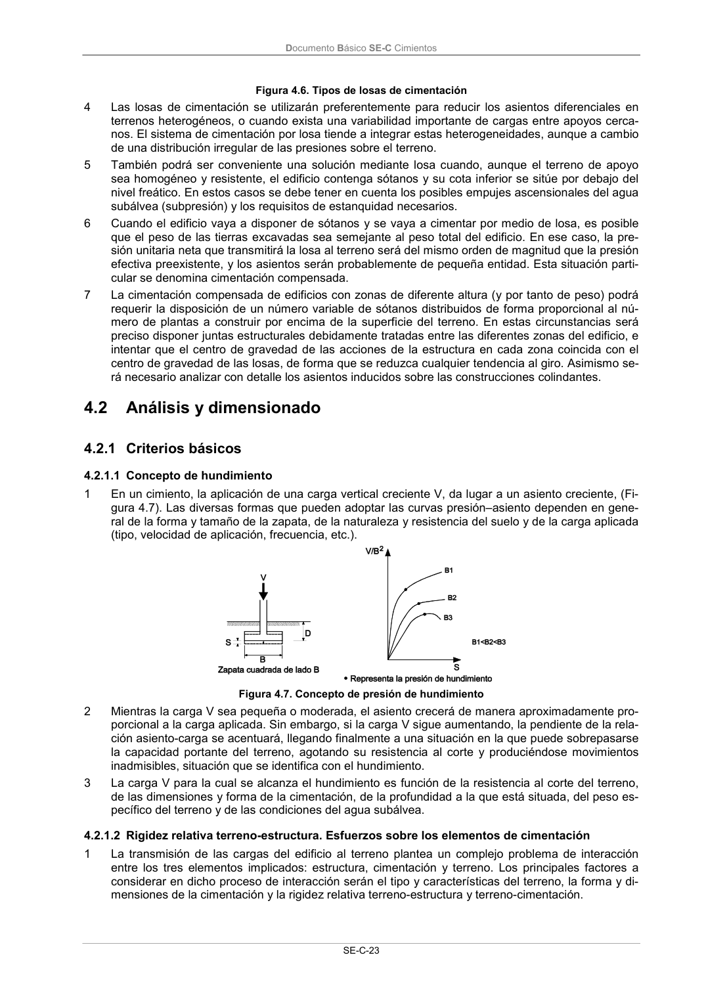

DB-SE-C Cimientos · edición 2019-12-20 · capa oficial
Documento DB-SE-C-oficial · SHA-256 del PDF a71133f4b0dca253e45ea3071c70f2a512354bcc5cd841bf89b1a502f567ac5e
Copia fiel del PDF fuente · Fuente oficial
Ficha de la disposición en la fuente oficial
Formatos: JSON del segmento · Markdown
4.2.1.1 Concepto de hundimiento 1 En un cimiento, la aplicación de una carga vertical creciente V, da lugar a un asiento creciente, (Fi- gura 4.7). Las diversas formas que pueden adoptar las curvas presión–asiento dependen en gene- ral de la forma y tamaño de la zapata, de la naturaleza y resistencia del suelo y de la carga aplicada (tipo, velocidad de aplicación, frecuencia, etc.). Figura 4.7. Concepto de presión de hundimiento 2 Mientras la carga V sea pequeña o moderada, el asiento crecerá de manera aproximadamente pro- porcional a la carga aplicada. Sin embargo, si la carga V sigue aumentando, la pendiente de la rela- ción asiento-carga se acentuará, llegando finalmente a una situación en la que puede sobrepasarse la capacidad portante del terreno, agotando su resistencia al corte y produciéndose movimientos inadmisibles, situación que se identifica con el hundimiento. 3 La carga V para la cual se alcanza el hundimiento es función de la resistencia al corte del terreno, de las dimensiones y forma de la cimentación, de la profundidad a la que está situada, del peso es- pecífico del terreno y de las condiciones del agua subálvea.
